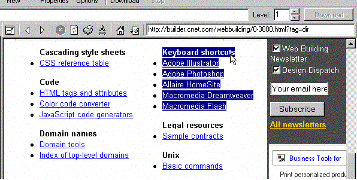

This is very easy with Portable Offline Browser.
Simply insert the page address in the internal browser address line, then press Enter. Once the page is loaded into the Internal Browser, select the area with links that you want to download and drag it to the Projects tree.
Once you drop the selection, Portable Offline Browser will create a new Project with the starting URL of the page with the desired links. Its Level will be set to 1, all images will be downloaded, plus URL Filters | Filename | Custom configuration will include the links you want to download.
Click OK and start downloading the new Project.
